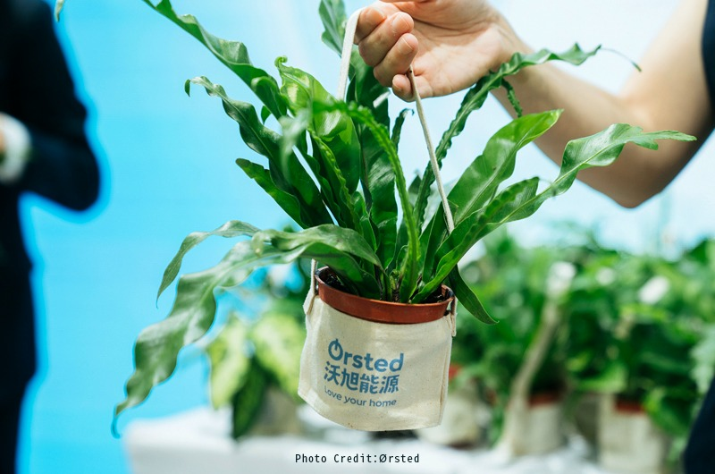
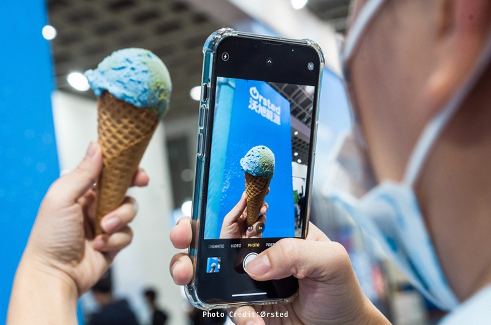
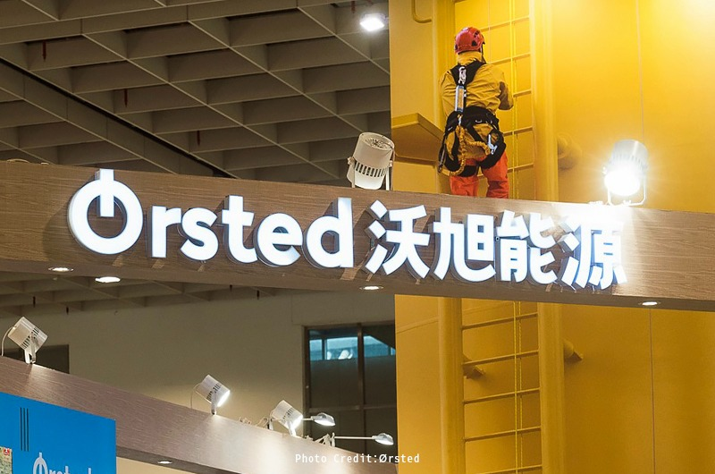

Energy Taiwan 2022 Ørsted Exhibition Stand
A Column in the Middle of the Floor
An existing structural column stood right in the middle of the site, the kind of obstacle every curatorial team eventually runs into. Rather than avoiding or hiding it, we chose to reinterpret it as an offshore wind turbine tower, wrapping it in custom paint and formwork, turning a purely negative structural constraint into the most visually charged installation along the booth's central axis.
A realistic climbing ladder was mounted along the column's side, and using on-site engineering photographs supplied by Ørsted, we composited the figure of a maintenance engineer in orange safety-harness gear climbing high up the ladder.
From a distance it was realistic enough that visitors momentarily mistook it for an actual person performing maintenance work at height, bringing the most routine yet most demanding reality of offshore wind work directly into the exhibition space and turning operations and maintenance from an abstract term into a tangible figure suspended in mid-air.
Beneath the surface of the sea, turbine foundations sit quietly rooted in the seabed; above the surface, the blades keep turning, converting the power of the wind into electricity for homes everywhere. Ørsted holds to the belief that it is building a world that runs entirely on green energy, and brought this ocean-born power into its booth at the 2022 Taiwan International Energy Week. We took on the design planning, construction, and overall visual direction for this project, letting a temporary exhibition space carry the weight of six years of the company's commitment to Taiwan.
A Narrative Built Around the Tower
With this tower as its anchor, the narrow booth site was given a clear narrative rhythm. At the entrance, a solid-timber beam frame formed a welcoming archway, with a large illuminated brand logo and a light box shaped like a turbine blade greeting visitors first, announcing the start of a journey about wind and sea.
The circulation used an angled approach to draw visitors deeper into the space, passing a meeting and lounge area, a brand video wall, and a main data wall, before finally reaching the main stage, completing a reading path from the brand's founding vision to its industrial track record.
At the far end of the booth stood a living green wall, quietly echoing the message of loving one's home: wind power comes from the sea and ultimately returns to this protected home on land.
Five Stories Along the Wall
During the design stage, we planned the content architecture alongside the space, translating Ørsted's corporate track record into five stories laid out along the circulation path. "Global Experience, Rooted in Taiwan" uses infographics to trace the company's journey from a global presence to the Taiwan Strait. "Taiwan's Only Locally Trained O&M Team" documents the journey from blueprint to launch of the world's first custom-built Taiwanese service operation vessel and O&M center, echoing the composited climbing figure on the tower column.
"ReCoral Coral Restoration Feasibility Study" turns the perspective beneath the waves, telling how offshore wind foundations quietly become potential habitat for coral regeneration. The "Wind Power Supplier Support Fund" traces the training path of ninety-two technicians receiving advanced welding training and eighty personnel earning GWO international safety certification.
"The Wind Rises in Changhua" closes the sequence with the faces and stories of ten local and newly relocated workers in Changhua, bringing this sweeping industrial narrative back down to real individual people.
Color as Brand System
The booth's visual system followed Ørsted's corporate identity guidelines throughout, building its spatial color plan around the brand's primary color, blue, and its supporting colors, purple and yellow. Blue, the base tone of ocean and sky, anchors the main wall, framing the earth-motif backdrop and brand tagline and letting the brand video play quietly across the LCD screen.
Purple settles into the weight of the data wall, carrying figures like cumulative installed capacity, wind-farm distribution maps, and Asia-Pacific locations, turning the company's footprint into a readable landscape. Yellow animates the volume's facade, paired with the safety-harness imagery on the tower column, making the professionalism and courage of the job site tangible.
Together the three colors form a condensed brand universe that visitors can read without a single word.
Sustainability Built Into the Materials
During construction, we made sure sustainability showed up in the booth's own material makeup, not just in what it talked about. Wall substrates used green-building-certified products such as plywood finished with wood-grain veneer and PVC print output, and all solid-timber components used recyclable, reusable material. The green wall at the far end was built from real living plants.
The climbing-ladder structure on the tower's surface, along with the composite ratio and mounting height of the photographs supplied by Ørsted, were tested and adjusted repeatedly on site to get the most realistic visual effect and the most reasonable proportions when viewed from the main circulation path.
The Screens Behind the Story
The booth featured two large 500 by 300 centimeter LED video walls as its primary display interface, presenting the brand's key visuals and data-wall content respectively and reinforcing visual reach from a distance across the exhibition floor. A standing 150 by 50 by 400 centimeter LED unit served as a supplementary display at a circulation node.
The space also included 43-inch, 55-inch, and 85-inch LCD displays and a 200 by 120 centimeter LED display wall, all carrying energy-efficiency certification. The large LED video walls also supported live presentation playback during the event, serving as the visual platform for on-site forums and topic discussions.
From the paint finish and formwork on the column, to the compositing, output, and mounting of the photographs, to the on-site assembly of the timber structure and the placement of every exhibit prop, every step of construction was checked against the original design proposal for proportion, material, and lighting effect.
Three Days
During the exhibition, the booth hosted an opening ceremony, a biodiversity forum, an executive conversation called Hygge with Per, a recruitment-themed talk, and other events, while the large LED video walls played presentations on topics like the Ørsted Supplier Support Fund's GWO talent-development grants, drawing a steady stream of industry professionals, job seekers, and media. At the opening ceremony, guests were led by tour staff past the column that had been given new life, looking up at the strikingly realistic figure high above as they stepped into the story of Ørsted's deep commitment to Taiwan.


